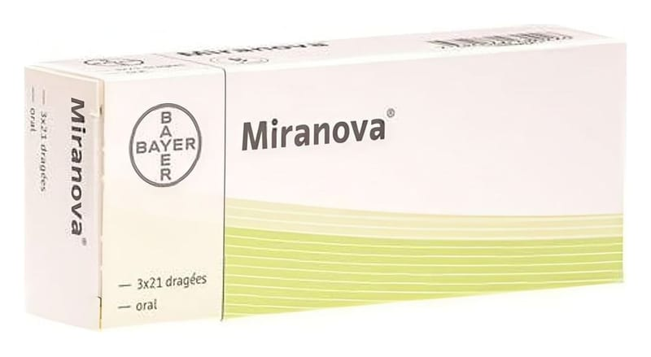

Miranova 100 mcg/20 mcg Kaplı Tablet, 21 Adet

Ne için kullanılır
KT · Bölüm 1• MIRANOVA, 21 tabletlik takvimli blister ambalajlarda bulunur ve tabletler pembe renktedir. Her bir kaplı tablet etkin madde olarak 0,1 mg levonorgestrel ve 0,02 mg etinilestradiol içerir. MIRANOVA, laktoz monohidrat (sığır kaynaklı) içerir.
• Östrojen ve progesteron hormonlarını içeren ve ağız yoluyla alınan doğum kontrol haplarına “Kombine Oral Kontraseptif (KOK)” denir. MIRANOVA da bu grupta yer alan bir ilaçtır. MIRANOVA’nın içindeki levonorgestrel ve etinilestradiol hipofiz bezinden (beynin alt kısmında yer alan ve önemli hormonlar salgıyan bir bez) salgılanan ve folikülün (yumurta hücresini içeren ufak kesecik) yumurtlama aşamasına kadar olgunlaşması için gerekli olan folikül uyarıcı hormonun (FSH) ve luteinleştirici hormonun (LH, adet döngüsünde yer alan bir hormon) salgılanmasını baskılarlar ve böylece yumurtlama engellenir. Levonorgestrel servikal mukusu koyulaştırır, bu sayede spermin yumurtaya ulaşması engellenir. Fallop tüplerinin (rahim üst köşelerinden yumurtalıklara kadar uzanan tüp şeklindeki yapılar) hareketleri ve salgıları da etkilenebilir. Ayrıca levonorgestrel rahim iç zarını da incelterek döllenmiş bir yumurtanın yerleşmesini engeller.
• MIRANOVA, gebeliği önlemek amacıyla kullanılır.